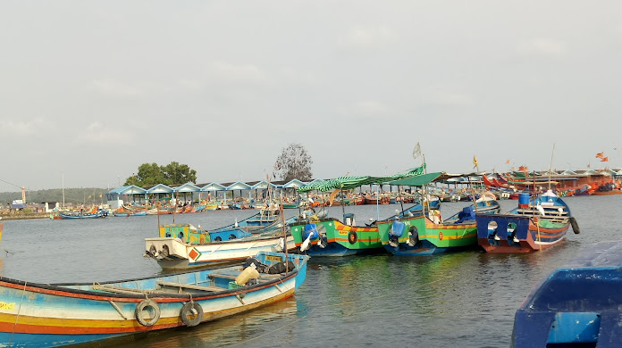
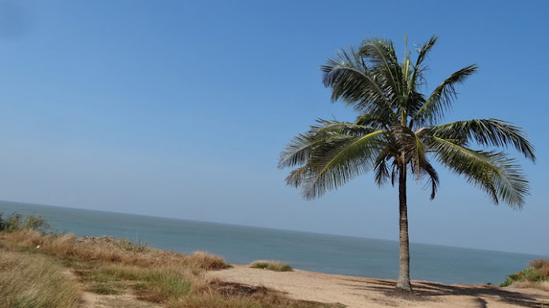

St. Angelo Fort (Kannur Fort)
St. Angelo Fort is a fort facing the Arabian Sea, situated 3 km from Kannur, a city in Kerala state, south India.

Mappila Bay
Mappila Bay is a natural harbor where one side of bay is built by Portuguese in 15th century and other side is Arakkal Palace.

Meenkunnu Beach
The Meenkunnu Beach, where golden sands and an idle sea await the opportunity to assail your senses. Watch the local fishermen